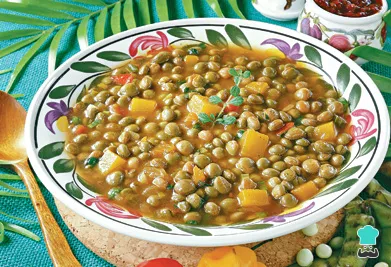

guandules con cocos

Descripcion
Los guandules guisados son una de las joyas de la cocina dominicana. Es un guiso de guandules cremoso, rico y toques ahumados que se sirve sobre arroz. Los guandules con coco, una versión de Samana son aún mejores
La combinación ganadora de coco y guandules se ve reforzada por la adición de auyama, que aporta un dulzor muy sutil al plato, le da un color precioso y lo hace bastante cremoso. Los amigos no dejan que los amigos coman guandules aguados.
Ingredientes
- 3 tazas guandules frescos, o 4 tazas de lata, o 3 tazas secos
- 2 cucharadas aceite, (maní, maíz o soya)
- 1 cebolla , pequeña cortada en octavos
- 2 dientes de ajo, majados
- ¼ cucharadita orégano
- 2 ají gustoso, (cachuchas, ajicitos) majados (opcional)
- 4 ramitas tomillo, (o 1 cdta. de tomillo seco)
- 2 tazas leche de coco, sin azúcar
- 3 tazas agua, (aprox.)
- 2 tazas auyama , cortada en cubos
- 3 ramitas perejil, picados (o cilantro)
- 1 cucharadita sal, al gusto
Preparacion
- Si usas guandules secos, ponlos a remojar en agua por 8 horas. Escurre y pon a hervir en agua con sal por 30 minutos. Escurre y reserva.
- En una olla grande, calienta el aceite a fuego medio. Agrega la cebolla y sofríe por 2 minutos.
- Agrega el ajo, orégano, ajíes, tomillo y sofríe por 1 minuto más.
- Agrega la leche de coco y el agua. Lleva a ebullición.
- Agrega los guandules y la auyama. Cocina a fuego lento por 20-30 minutos o hasta que los guandules estén tiernos.
- Agrega el perejil y ajusta la sal al gusto. Cocina por 5 minutos más.
Home